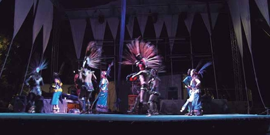
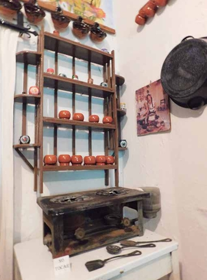
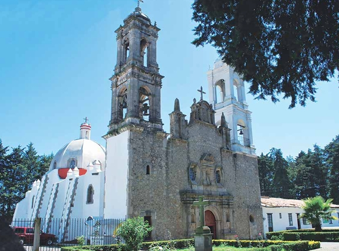
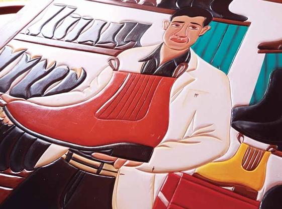
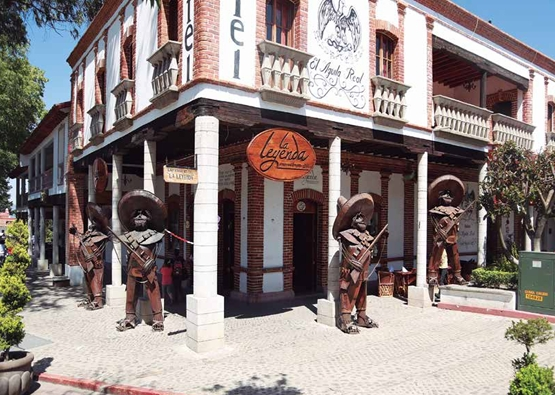
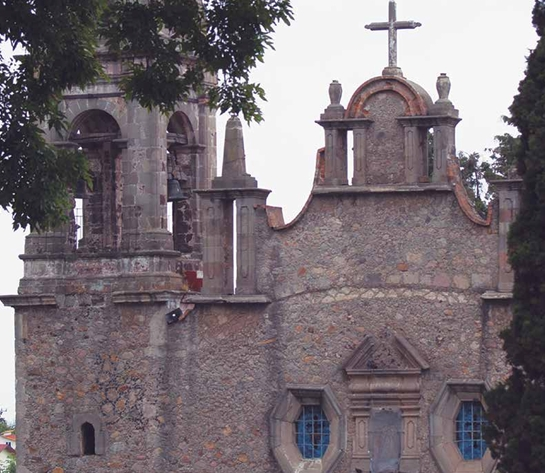
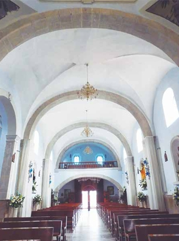
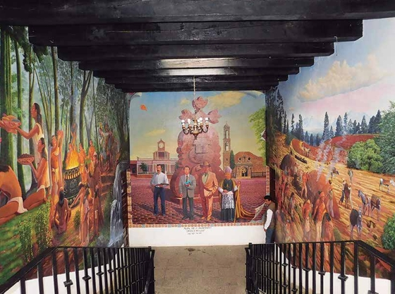

Antiguos habitantes: Antes de la llegada de los españoles, el área estuvo poblada por pueblos otomíes y nahuas; una antigua comunidad se llamaba Nñontle, que significa “Cima del Cerro”.
La erección como municipio data de 1713, cuando se separó de lo que hoy es Chapa de Mota.
El nombre Villa del Carbón proviene de su antigua actividad de extracción y producción de carbón vegetal en la época colonial, actividad clave que dio identidad a la región.
Villa del Carbón fue nombrado Pueblo Mágico de México el 25 de septiembre de 2015, destacando por su belleza natural, arquitectura colonial y tradiciones culturales.
Presa de Taxhimay: Esta presa inundó en 1934 el antiguo pueblo de San Luis de las Peras; aún se puede ver la torre de su iglesia sobresaliendo del agua, lo que es un ícono fotográfico.
Artesanía en piel: Es famoso por la producción artesanal de botas, botines charros, cinturones, chamarras y otros artículos de piel, así como tejidos de lana.
La charrería es muy representativa en Villa del Carbón. Aquí se celebran importantes eventos nacionales, con asociaciones y grupos de escaramuzas destacadas.
Villa del Carbón es conocido como el “Pueblo de la Montaña” por su gran cantidad de bosques.
Villa del Carbón es uno de los municipios más boscosos del Estado de México.
Villa del Carbón abastecía carbón a la Ciudad de México en el siglo XIX.







